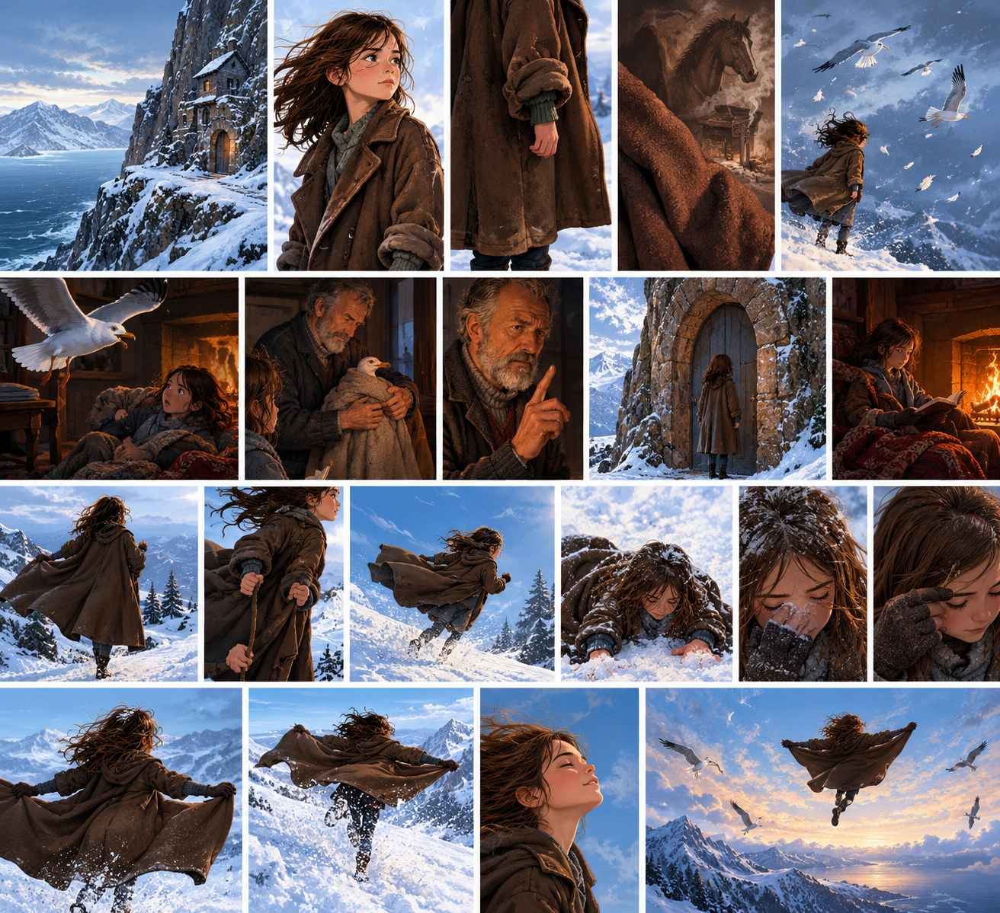

Beware Low-Flying Girls — the extract
Katherine Rundell · opening extract

Illustrations of Odile, her home, her grandfather, and her father's coat, from the extract.
Key words for this session
Understanding the story
- genre
- a type of story (for example, adventure, comedy, crime, science fiction)
- setting
- where a story happens
Reading the text closely
- context
- the words around a word, which can help you work out what it means
- explicit information
- facts the writer tells you clearly, in the words on the page
- implicit information
- an idea the writer doesn't say directly, but that you can work out from clues in the text
- narrative structure
- the order that things happen in a story
Sharing your ideas
- predict
- say what you think might happen next
- opinion
- your own view about something, which does not have to match a fact
Ingredients & Recipe
Sort each feature into Character, Setting, Situation or Ending
Adventure stories all share the same kind of "ingredients", and follow a similar "recipe". Tap the box you think each feature belongs to. Then press Check answers to see how you did.
Story order
Narrative structure: the order things happen in the extract
A timeline shows the order things happen in a story. Here are the first four points from the extract.
1
You are told Odile can fly.
2
The strength of the wind is described.
3
Her father's coat is described.
4
You find out that Odile's grandfather and Odile live alone.
Now you try: what do you think the last two points are? Have a go, then press the button to check your ideas.
Comprehension
Scan for explicit information, then work out implicit information
Tap a question below. Question & extract shows you the part of the text you need, without giving away the answer. Answer & explanation unpacks the question for you (it shows what kind of answer to give, and exactly what the question is about), points to the exact words in the text that give the answer, and gives you a model answer.
Vocabulary in context
From the third paragraph of the extract
First: read the third paragraph again and try to guess what each word means from the words around it. Then: tap a word, then tap the definition you think matches it.
Matched: 0 / 4